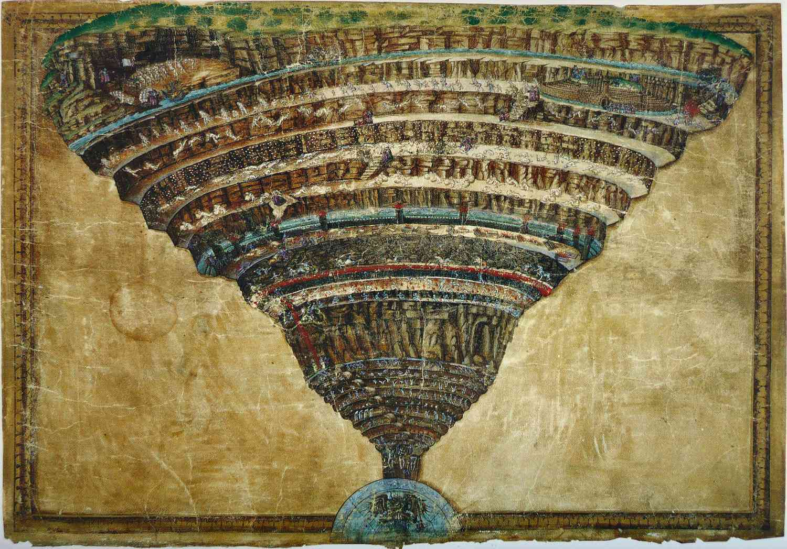
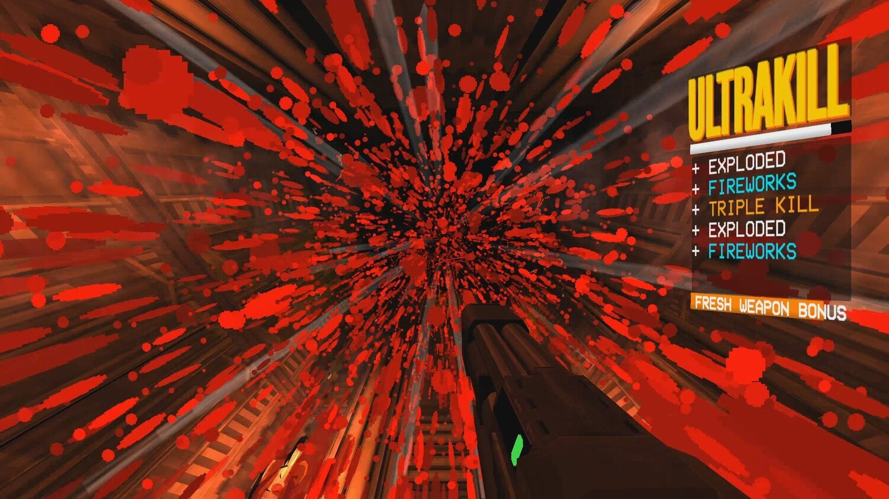

Timeline
Ultrakill was first released on september 3 2020. It originally contained just the games prolougue and first act. Since then the game had progressed miles from where it began. The developers have since added a second act and are currently working on the third at the time of writing this. (4/28/2004) Not only are more levels avaliable, but the devs have also added more weapons and customization options.
Music
Similar to the conbat, another of the games most attracting features is undenaibly it's music. It perfectly matches the fast paced nature of the game and forces your body to make as much adreniline as possible. The producer of the music is none other than Hakita himself, so not only is he a talented game developer, but is also equally gifted with music skills.
Goal
The goal of ultrakill is realativly simple. Kill everything in sight and do it in as cool of a way as you can. You play the game as a robot named V1 who's main directive is to gather blood which it uses as fuel. To do this you run through the 9 layers of hell, based off of dantes inferno, to kill anything that moves.
The game also spices up your murderous rampage by adding a scoring system. As you progress through each level you will have a score ranging from the worst, 'D' for destructive, all the way to 'ULTRAKILL'. To raise your score the game requires the player to kill their enemies in a varaity of ways. If you kill a enemy the games gives you 30 points. If you kill 3 enemies withen half a second you a awarded 100 points. The player will also be penilized by gaining less points if they continue to use the same weapons for too long.
